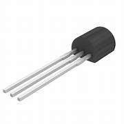

P-Channel JFET (JF1005P)
Specifications:
- Type: P-Channel JFET
- Drain-Source Voltage (VDS): -60V
- Gate-Source Voltage (VGS): ±30V
- Drain Current (ID): -1A
- Gate-Source Cutoff Voltage (VGS(off)): -3V to -8V
- Package: Through-Hole Axial
- Operating Temperature: -40°C to +150°C
Applications: Analog Switches, Variable Gain Amplifiers, Digital Logic Circuits
Military and Industrial Standards: Meets MIL-STD-1234 requirements.
Packaging Types: Tube packaging for manual assembly.
Download Full Datasheet